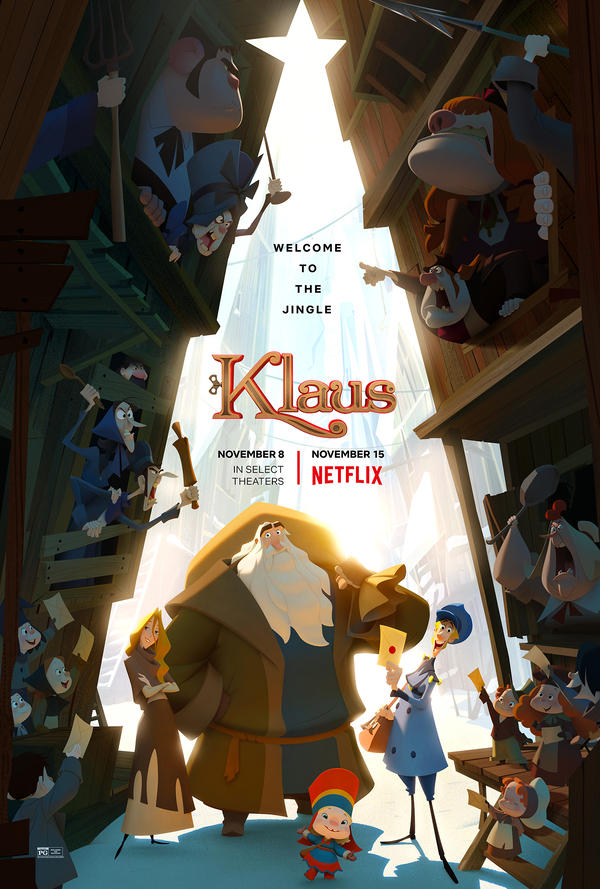
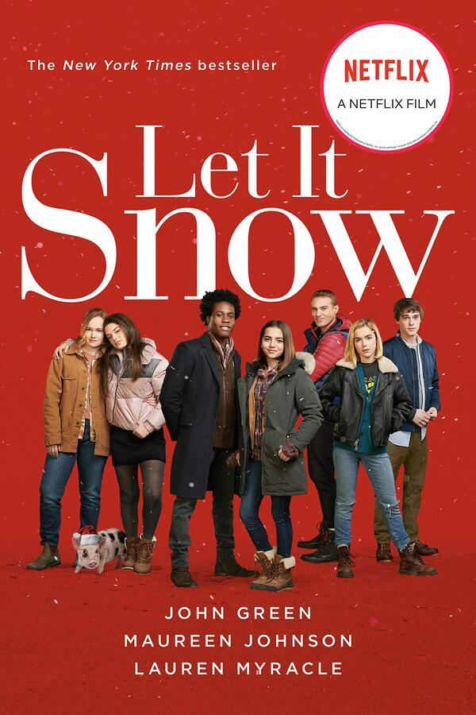

1. The Knight Before Christmas (Hiệp Sĩ Giáng Sinh)
Sir Cole (Josh Whitehouse) là một hiệp sĩ thời trung cổ, anh được một nữ phù thủy đưa đến Ohio thời hiện đại. Tại đây anh làm quen và kết bạn được với Brooke (Vanessa Hudgens) - một cô nàng giáo viên khoa học tốt bụng và thông minh. Chỉ còn vài ngày nữa là đến lễ Noel, phù thủy nói với Sir Cole rằng anh ta phải hoàn thành nhiệm vụ trước đêm Giáng sinh hoặc là anh sẽ bị mắc kẹt ở thời hiện đại và không thể trở về. Cô giáo viên tốt bụng Brooke đã tin tưởng và giúp đỡ Sir Cole tìm hiểu về thế giới hiện đại và cố gắng tìm cách giúp anh hoàn thành nhiệm vụ để trở về nhà.
Nếu là một người mê thể loại phim tình cảm lãng mạn pha chút hài hước thì The Knight Before Christmas là một bộ phim bạn nên xem để có những phút giây thư giãn, thoải mái sau những giờ làm việc căng thẳng.
2. Merry Happy Whatever (Giáng Sinh? Nghỉ Lễ? Sao Cũng Được) mùa 1

Merry Happy Whatever là một bộ phim sitcom mùa Giáng sinh với 30 phút mỗi tập. Bộ phim kể về trước lễ Giáng sinh Emmy đưa bạn trai của mình là anh chàng Matt từ Los Angeles về nhà để cùng tham gia bữa tiệc gia đình.
Tuy nhiên đây lại là một chuỗi ngày kinh hoàng đối với Matt vì phải đổi mặt với bố của Emmy - một người cảnh sát trưởng mạnh mẽ, và thích kiểm soát tất cả mọi người xung quanh. Đối mặt với những tình huống dở khóc dở cười liệu tình cảm của Matt và Emmy có bị lung lay sau những ngày ở nhà cô bạn gái?
Đặc biệt, phim có sự tham gia của ca sĩ - diễn viên Ashley Tisdale xinh đẹp và nổi tiếng. Nếu muốn giải trí vào khoảng thời gian rảnh rỗi thì Merry Happy Whatever là sự lựa chọn phù hợp dành cho bạn.3. American Son (Người Con Đất Mỹ)

American Son (Người con đất Mỹ) là một bộ phim kể về một cặp vợ chồng khác sắc tộc đã ly hôn gặp nhau tại một đồn cảnh sát ở Nam Florida trong một đêm mưa. Họ gặp nhau để cùng tìm đứa con trai tuổi teen bị mất tích của họ. Sau một thời gian dài mất tích của cậu bé vẫn không có bất kỳ tung tích hay một thông tin gì liên quan đến cậu bé khiến cho tình hình ngày càng căng thẳng hơn. Liệu câu chuyện sẽ tiếp tục như thế nào, cậu bé đã bị mất tích ra làm sao? Mọi chuyện sẽ được sáng tỏ khi bạn xem hết bộ phim này.
American Son từng được dựng thành một vở kịch và diễn thành công trên sân khấu kịch Broadway. Hiện nay American Son nay được chuyển thể thành phim điện ảnh và cũng khá thành công với sự tham gia diễn xuất của nữ diễn viên Kerry Washington thủ vai Kendra Ellis-Connor - mẹ của cậu bé mất tích, cô cũng là người đóng vai chính trên sân khấu Broadway. Đây là một bộ phim tâm lý khá hay giúp bạn giải trí sau những giờ làm việc căng thẳng.
4. The King (Quốc Vương)

Bộ phim lịch sử The King do chàng diễn viên Timothée Chalamet thủ vai chính sẽ được Netflix phát hành tháng 11 này. Timothée vào vai Henry - chàng hoàng tử trẻ của xứ Wales. Henry (thường được những người thân cận gọi là "Hal"), là con trai đầu của vua Henry IV xứ Wales. Mặc dù là con trai cả nhưng Hal bị vua cha đối xử lạnh nhạt và như thể một đứa con bị bỏ quên trong mắt Henry IV. Trước những mưu đồ chinh chiến của vua cha cũng như việc thừa kế ngôi báu, Hal không hề để tâm mà suốt ngày chỉ biết rượu chè, ăn chới, gái gú cùng hầu cận của mình là John Falstaff ở những xó xỉnh của Eastcheap.
Sau sự ra đi của em trai và cha, Hal bắt buộc lên ngôi và trở thành vua Henry V khi tuổi còn khá trẻ. Mặc dù có nhiều bỡ ngỡ khi lên trị vì vương quốc của mình nhưng với sự bản lĩnh, Henry V đã chứng minh được mình là một trong những ông vua chinh chiến lẫy lừng nhất của nước Anh thời Trung Cổ. Ngoài diễn viên Timothée, The King còn có sự góp mặt của chàng ma cà rồng Robert Pattinson trong vai The Dauphin em trai của Hal.
Nếu yêu thích thể loại phim trung cổ anh với những tình tiết chinh chiến, chiến đấu thì The King cũng là một bộ phim giúp bạn giải trí khi rảnh rỗi đó nha.5. Klaus (Câu Chuyện Giáng Sinh)
Nếu những bộ phim ở trên dành cho người lớn, đối tượng tuổi teen thì bộ phim Klaus (câu chuyện Giáng Sinh) này Netflix lại ưu ái dành cho các khán giả nhỏ tuổi. Klaus (Câu Chuyện Giáng Sinh) được sản xuất bởi hãng hoạt hình SPA, kể câu chuyện về anh chàng Jesper (Jason Schwartzman)- anh con trai ích kỷ và lười biếng của ngài Cục trưởng Bưu chính giàu có. Luôn ỷ lại vào bố của mình là một cục trưởng bưu chính Jesper không lo học hành, chỉ biết hưởng thụ cuộc sống. Không thể chịu nổi tính cách này của con trai mình, ngài cục trưởng đã buộc Jesper tới Smoorenburg, một vùng đất khô cằn, quanh năm giá lạnh ở Bắc cực, và hoàn toàn không có dịch vụ Bưu chính.
Tại đây Jesper đã làm bạn được với Klaus - một người thợ mộc sống một mình. Anh chàng Jesper sẽ thay đổi như thế nào kể từ khi quen với Klaus? Liệu anh có hoàn thành nhiệm vụ của cha và những điều gì sẽ đến với anh sắp tới? Hãy bật ngay Netflix để cùng thư giãn với con, em của mình nhé! Klaus (Câu chuyện Giáng Sinh) dự kiến sẽ là bộ phim hoạt hình vui nhộn, rất phù hợp với các nhóc tỳ và những bạn thích phim hoạt hình.
Klaus (Câu chuyện Giáng Sinh) dự kiến sẽ là bộ phim hoạt hình vui nhộn, rất phù hợp với các nhóc tỳ6. Holiday in the Wild (Nghỉ Lễ Nơi Hoang Dã)

"Holiday in the Wild"kể về chuyến du lịch của Kate Conrad (Kristin Davis), một cô gái hiện đại, sành điệu đến Châu Phi sau khi ly hôn với chồng. Cô dự định sẽ sống trong một safari 5 sao. Tuy nhiên Kate lại thay đổi và quyết định lang thang ở nơi hoang dã. Ở vùng đất hoang dã châu Phi, Kate Conrad nhận nuôi một chú voi mồ côi. Cô nhận được sự giúp đỡ của Derek Holliston (Rob Lowe)- một anh chàng điển trai và có chút bụi bặm. Liệu chuyện tình của Kate Conrad và Derek Holliston sẽ diễn biến như thế nào? Sau kỳ nghỉ Kate Conrad lựa chọn quay trở về với cuộc sống cũ của mình hay ở lại cùng Derek Holliston chăm sóc chú voi? Holiday in the Wild dự kiến là một bộ phim hài lãng mạn, rất phù hợp để bạn có những giây phút giải trí cùng người yêu và gia đình của mình.
7. The End of the F***ing World (Hành Trình Chết Tiệt) mùa 2
The End of the F**king World 2 được chuyển thể từ bộ truyện cùng tên của nhà văn Charles Forstman. Đây là một bộ phim truyền hình của Netflix dài 8 tập. Phim kể về James - cậu bé 17 tuổi và tự nhận mình là một kẻ biến thái nhân cách và bị tâm thần. Cậu đã đồng ý giúp đỡ cô bạn cùng trường mới của câu là Alyssa - một cô bé lúc nào cũng mang vẻ mặt buồn rầu và bất mãn với mọi thứ. Từ hai người có phần lập dị họ nhanh chóng cảm thấy ở nhau những điểm chung, sự đồng cảm. Alyssa cùng James cùng tham gia vào một chuyến hành trình để tìm ra người cha thực sự của cô bé.
Câu chuyện sẽ diễn ra như thế nào tiếp theo? Nếu yêu thích thể loại phim tâm lý, hài hước bạn có thể xem thử The End of the F**king World 2 để giải trí khi có thời gian rảnh rỗi hay muốn xem một bộ phim để giải tỏa căng thẳng nhé!
8. Let It Snow (Hãy Để Tuyết Rơi)
Let It Snow (Hãy Để Tuyết Rơi) là một bộ phim kể về một ngày tuyết rơi trước lễ Giáng Sinh trên một thị trấn nhỏ. Một nhóm thanh thiếu niên là Julie về lại thị trấn để thăm mẹ bị bệnh, tình cờ gặp gỡ ngôi sao Stuart trên tàu; cô gái Addie đang quá lo lắng về người bạn trai vô tâm của mình; chàng trai Tobin đem lòng yêu thầm cô bạn thân Angie đã lâu nhưng không dám thổ lộ; Keon với mơ ước về một bữa tiệc Giáng sinh tuyệt vời cùng người thân, bạn bè…
Cuối cùng, họ đều tụ họp ở bữa tiệc tại quán Waffle Town. Thật không may một cơn bão tuyết tấn công thị trấn nhỏ đúng đêm Noel, khiến họ bị mắc kẹt lại với nhau. Trong lễ Giáng Sinh dị thường này, họ tìm thấy được tình yêu, tình bạn cùng rất nhiều những điều ý nghĩa khác của cuộc sống. Let It Snow có một mạch phim nhẹ nhàng, ngọt ngào lại đậm chất Giáng sinh.
Vừa đủ hải hước, vừa đủ chân thực, cũng vừa đủ lãng mạn là những gì Let It Snow sẽ mang lại cho bạn9. The Crown (Hoàng Quyền) mùa 3
Dựa trên những câu chuyện có thật về hoàng gia Anh, The Crown (Hoàng Quyền) là một trong những series ăn khách nhất nhì trên nền tảng xem phim trực tuyến Netflix.
Đằng sau cánh cổng cung điện hào nhoáng, đằng sau cuộc sống xa hoa, là sự ngột ngạt của các thành viên hoàng tộc vì phải tuần theo hàng loạt quy tắc khắt khe, nghĩa vụ nặng nề. The Crown (Hoàng Quyền) mùa 3 hé lộ chuyện tình thời trẻ giữa Hoàng tử Charles và người tình Camilla - người anh buộc phải từ bỏ để kết hôn cùng Công nương Diana. Liệu chuyện tình này có được chấp nhận? Hãy xem bộ phim The Crown để cảm nhận được hết câu chuyện này nhé!
Nếu là một người mê thể loại phim hoàng tộc thì đây có lẽ sẽ là bộ phim bạn không nên bỏ lỡ.Lời kết,
Vậy là AESHOP đã giới thiệu đến bạn 09 bộ phim Netflix tháng 11/2021 hay và sẽ mang lại cho bạn những giây phút giải trí, thoải mái sau những bộn bề công việc rồi nè. Hãy Netflix and Chill với bạn bè, người thân để trải nghiệm xem phim thêm hấp dẫn và thú vị nhé!